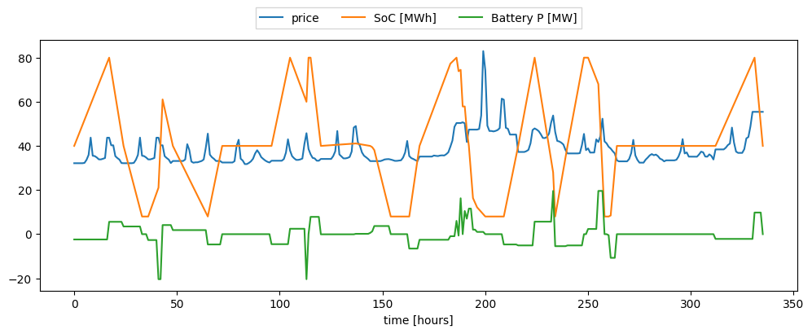
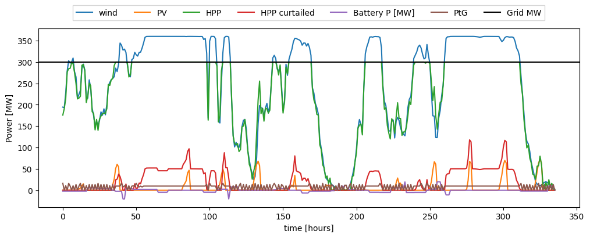
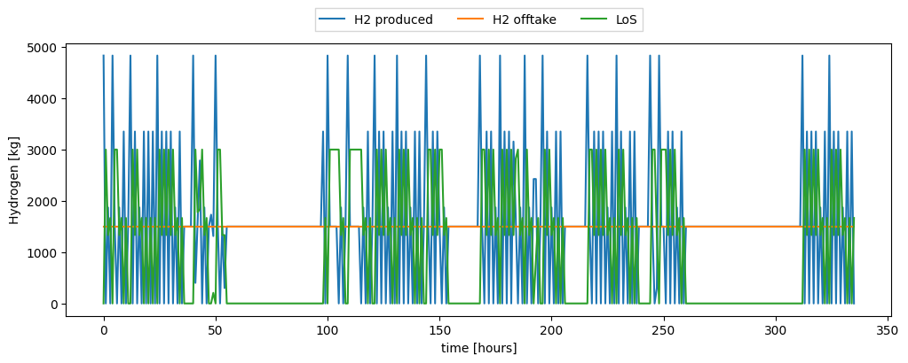
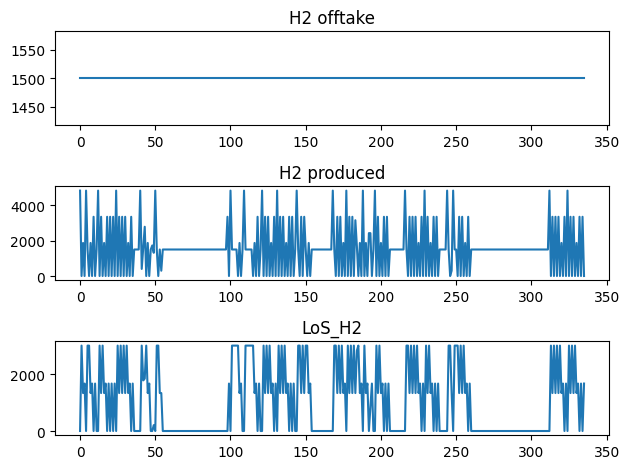

Evaluating the performance of a hybrid power plant with P2X using HyDesign
This tutorial focuses on integrating Power-to-X (P2X) technology with hybrid power plants. P2X involves converting electricity into other forms of energy, such as hydrogen, which can be used or stored for later use. This guide will walk you through the setup and evaluation of an HPP with P2X, demonstrating how to model and analyze the performance of such systems under different scenarios.
A hybrid power plant design consists on selecting the following parameters:
Wind Plant design:
Number of wind turbines in the wind plant [-] (
Nwt)Wind power installation density [MW/km2] (
wind_MW_per_km2): This parameter controls how closely spaced are the turbines, which in turns affect how much wake losses are present.
PV Plant design:
Solar plant power capacity [MW] (
solar_MW)
Battery Storage design:
Battery power [MW] (
b_P)Battery energy capacity in hours [MWh] (
b_E_h): Battery storage capacity in hours of full battery power (b_E = b_E_h * b_P).Cost of battery power fluctuations in peak price ratio [-] (
cost_of_batt_degr): This parameter controls how much penalty is given to do ramps in battery power in the HPP operation.
Electrolyzer design:
Electrolyzer capacity [MW] (
ptg_MW)H2 storage capacity [kg] (
HSS_kg)
Imports
Install hydesign if needed. Import basic libraries. Import HPP model assembly class. Import the examples file path.
[11]:
# Detect if running in Kaggle
import os
if os.environ.get('KAGGLE_KERNEL_RUN_TYPE'):
mypaths = !python -c "import sysconfig; print(sysconfig.get_paths()['purelib'])"
mypath = mypaths[0]
!pip install trash-cli
!trash $mypath/numpy*
!pip install --upgrade numpy
!pip install finitediff
import os
os.kill(os.getpid(), 9)
[12]:
# Install hydesign if needed
import importlib
if not importlib.util.find_spec("hydesign"):
!pip install git+https://gitlab.windenergy.dtu.dk/TOPFARM/hydesign.git
[2]:
import os
import time
import yaml
import numpy as np
import pandas as pd
import matplotlib.pyplot as plt
from hydesign.assembly.hpp_assembly_P2X import hpp_model_P2X as hpp_model
from hydesign.examples import examples_filepath
C:\Users\mikf\Anaconda3\envs\hd2\lib\site-packages\pyoptsparse\pyOpt_MPI.py:68: UserWarning: mpi4py could not be imported. mpi4py is required to use the parallel gradient analysis and parallel objective analysis for non-gradient based optimizers. Continuing using a dummy MPI module from pyOptSparse.
warnings.warn(warn)
Specifying the site
Hydesign, provides example data from several sites in India and Europe.
The site coordinates (longitude, latitude, and altitude) are given in examples_sites.csv.
[3]:
examples_sites = pd.read_csv(f'{examples_filepath}examples_sites.csv', index_col=0, sep=';')
examples_sites
[3]:
| case | name | longitude | latitude | altitude | input_ts_fn | sim_pars_fn | price_fn | price_col | H2_demand_col | |
|---|---|---|---|---|---|---|---|---|---|---|
| 0 | India | Indian_site_good_wind | 77.500226 | 8.334294 | 679.803454 | India/GWA3/input_ts_Indian_site_good_wind.csv | India/hpp_pars.yml | India/Indian_elec_price_t.csv | Price | India/H2_demand.csv |
| 1 | India | Indian_site_good_solar | 68.542204 | 23.542099 | 29.883557 | India/GWA3/input_ts_Indian_site_good_solar.csv | India/hpp_pars.yml | India/Indian_elec_price_t.csv | Price | India/H2_demand.csv |
| 2 | India | Indian_site_bad_solar_bad_wind | 77.916878 | 17.292316 | 627.424643 | India/GWA3/input_ts_Indian_site_bad_solar_bad_... | India/hpp_pars.yml | India/Indian_elec_price_t.csv | Price | India/H2_demand.csv |
| 3 | Europe | France_good_solar | 4.229736 | 44.422011 | 204.000000 | Europe/GWA3/input_ts_France_good_solar.csv | Europe/hpp_pars.yml | Europe/2030-EL_PRICE.csv | FR_R | Europe/H2_demand.csv |
| 4 | Europe | France_good_wind | -0.864258 | 48.744116 | 302.000000 | Europe/GWA3/input_ts_France_good_wind.csv | Europe/hpp_pars.yml | Europe/2030-EL_PRICE.csv | FR_R | Europe/H2_demand.csv |
| 5 | Europe | France_bad_solar_n_wind | 2.167969 | 47.428087 | 140.000000 | Europe/GWA3/input_ts_France_bad_solar_n_wind.csv | Europe/hpp_pars.yml | Europe/2030-EL_PRICE.csv | FR_R | Europe/H2_demand.csv |
| 6 | Europe | Germany_bad_solar_n_wind | 10.766602 | 49.310798 | 442.000000 | Europe/GWA3/input_ts_Germany_bad_solar_n_wind.csv | Europe/hpp_pars.yml | Europe/2030-EL_PRICE.csv | DE_ME | Europe/H2_demand.csv |
| 7 | Europe | Germany_good_wind | 7.873535 | 53.287111 | 5.000000 | Europe/GWA3/input_ts_Germany_good_wind.csv | Europe/hpp_pars.yml | Europe/2030-EL_PRICE.csv | DE_NW | Europe/H2_demand.csv |
| 8 | Europe | Denmark_good_solar | 11.813965 | 55.397760 | 42.000000 | Europe/GWA3/input_ts_Denmark_good_solar.csv | Europe/hpp_pars.yml | Europe/2030-EL_PRICE.csv | DK_E | Europe/H2_demand.csv |
| 9 | Europe | Denmark_good_wind | 8.594398 | 56.227322 | 85.000000 | Europe/GWA3/input_ts_Denmark_good_wind.csv | Europe/hpp_pars.yml | Europe/2030-EL_PRICE.csv | DK_W | Europe/H2_demand.csv |
Select a site to run
[4]:
name = 'Denmark_good_wind'
ex_site = examples_sites.loc[examples_sites.name == name]
longitude = ex_site['longitude'].values[0]
latitude = ex_site['latitude'].values[0]
altitude = ex_site['altitude'].values[0]
[5]:
# Weather data and Price data
input_ts_fn = examples_filepath+ex_site['input_ts_fn'].values[0]
input_ts = pd.read_csv(input_ts_fn, index_col=0, parse_dates=True)
required_cols = [col for col in input_ts.columns if 'WD' not in col]
input_ts = input_ts.loc[:,required_cols]
input_ts
[5]:
| WS_1 | WS_50 | WS_100 | WS_150 | WS_200 | temp_air_1 | ghi | dni | dhi | Price | |
|---|---|---|---|---|---|---|---|---|---|---|
| 2012-01-01 00:00:00 | 3.288440 | 8.417390 | 10.213819 | 11.600266 | 13.410397 | 276.767325 | 0.035121 | 0.0 | 0.035121 | 32.158 |
| 2012-01-01 01:00:00 | 3.274595 | 8.398900 | 10.193205 | 11.776955 | 13.505000 | 277.374423 | 0.017560 | 0.0 | 0.017560 | 32.158 |
| 2012-01-01 02:00:00 | 3.562195 | 8.909059 | 10.765491 | 12.512967 | 14.097999 | 278.015879 | 0.000000 | 0.0 | 0.000000 | 32.158 |
| 2012-01-01 03:00:00 | 3.994770 | 9.681503 | 11.634468 | 13.791528 | 15.302164 | 278.655888 | 0.000000 | 0.0 | 0.000000 | 32.158 |
| 2012-01-01 04:00:00 | 4.280727 | 10.094911 | 12.071632 | 14.358765 | 15.676826 | 279.290819 | 0.000000 | 0.0 | 0.000000 | 32.158 |
| ... | ... | ... | ... | ... | ... | ... | ... | ... | ... | ... |
| 2012-12-31 19:00:00 | 6.982550 | 15.994200 | 19.028254 | 21.861165 | 23.342218 | 280.869008 | 0.000000 | 0.0 | 0.000000 | 35.446 |
| 2012-12-31 20:00:00 | 6.701203 | 15.384391 | 18.312855 | 21.021135 | 22.469301 | 280.877234 | 0.000000 | 0.0 | 0.000000 | 33.565 |
| 2012-12-31 21:00:00 | 6.250792 | 14.444226 | 17.213032 | 19.796159 | 21.174110 | 280.891512 | 0.000000 | 0.0 | 0.000000 | 32.709 |
| 2012-12-31 22:00:00 | 5.121517 | 11.980019 | 14.307815 | 16.421864 | 17.590641 | 280.635464 | 0.000000 | 0.0 | 0.000000 | 31.392 |
| 2012-12-31 23:00:00 | 4.267654 | 10.112063 | 12.102478 | 13.882116 | 14.852529 | 280.532691 | 0.000000 | 0.0 | 0.000000 | 30.124 |
8784 rows × 10 columns
[6]:
# Hydrogen demand data, when H2 offtake is infinite -> make H2_demand values very high (1e6) in H2_demand.csv file and penalty_H2 as '0' in hpp_pars.yml file
H2_demand_fn = examples_filepath+ex_site['H2_demand_col'].values[0]
H2_demand_ts = pd.read_csv(H2_demand_fn, index_col=0, parse_dates=True)
H2_demand_ts
[6]:
| H2_demand | |
|---|---|
| 2012-01-01 00:00:00 | 1500 |
| 2012-01-01 01:00:00 | 1500 |
| 2012-01-01 02:00:00 | 1500 |
| 2012-01-01 03:00:00 | 1500 |
| 2012-01-01 04:00:00 | 1500 |
| ... | ... |
| 2012-12-31 19:00:00 | 1500 |
| 2012-12-31 20:00:00 | 1500 |
| 2012-12-31 21:00:00 | 1500 |
| 2012-12-31 22:00:00 | 1500 |
| 2012-12-31 23:00:00 | 1500 |
8784 rows × 1 columns
[7]:
# Input data of technology's cost
sim_pars_fn = examples_filepath+ex_site['sim_pars_fn'].values[0]
with open(sim_pars_fn) as file:
sim_pars = yaml.load(file, Loader=yaml.FullLoader)
print(sim_pars_fn)
sim_pars
c:/sandbox/repo/topfarm/hydesign/hydesign/examples/Europe/hpp_pars.yml
[7]:
{'G_MW': 300,
'year': '2012',
'N_life': 25,
'wind_turbine_cost': 640000,
'wind_civil_works_cost': 260000,
'wind_fixed_onm_cost': 12600,
'wind_variable_onm_cost': 1.35,
'd_ref': 145,
'hh_ref': 100,
'p_rated_ref': 5.0,
'wpp_efficiency': 1,
'wind_deg_yr': [0, 25],
'wind_deg': [0, 0.25],
'share_WT_deg_types': 0.5,
'solar_PV_cost': 110000,
'solar_hardware_installation_cost': 100000,
'solar_inverter_cost': 20000,
'solar_fixed_onm_cost': 4500,
'land_use_per_solar_MW': 0.01226,
'tracking': 'No',
'pv_deg_yr': [0, 1, 25],
'pv_deg': [0.03, 0.03, 0.28],
'battery_energy_cost': 45000,
'battery_power_cost': 16000,
'battery_BOP_installation_commissioning_cost': 18000,
'battery_control_system_cost': 4500,
'battery_energy_onm_cost': 0,
'battery_depth_of_discharge': 0.9,
'battery_charge_efficiency': 0.98,
'battery_price_reduction_per_year': 0.1,
'min_LoH': 0.7,
'n_full_power_hours_expected_per_day_at_peak_price': 0,
'peak_hr_quantile': 0.9,
'price_H2': 5,
'storage_eff': 0.9,
'ptg_deg': 2,
'hhv': 39.3,
'water_consumption': 9.4,
'electrolyzer_capex_cost': 480000,
'electrolyzer_opex_cost': 9600,
'electrolyzer_power_electronics_cost': 0,
'water_cost': 4,
'water_treatment_cost': 2,
'H2_storage_capex_cost': 300,
'H2_storage_opex_cost': 3,
'H2_transportation_cost': 5,
'H2_transportation_distance': 0,
'penalty_factor_H2': 0.5,
'electrolyzer_eff_curve_name': 'Alkaline electrolyzer H2 production',
'min_power_standby': 0.1,
'ramp_up_limit': 50,
'ramp_down_limit': 50,
'hpp_BOS_soft_cost': 119940,
'hpp_grid_connection_cost': 50000,
'land_cost': 300000,
'wind_WACC': 0.052,
'solar_WACC': 0.048,
'battery_WACC': 0.08,
'tax_rate': 0.22,
'ptg_WACC': 0.07,
'phasing_yr': [-1, 0],
'phasing_CAPEX': [1, 1],
'inflation_yr': [-3, 0, 1, 25],
'inflation': [0.1, 0.1, 0.06, 0.06],
'ref_yr_inflation': 0,
'depreciation_yr': [0, 25],
'depreciation': [0, 1],
'era5_zarr': '/groups/reanalyses/era5/app/era5.zarr',
'ratio_gwa_era5': '/groups/INP/era5/ratio_gwa2_era5.nc',
'era5_ghi_zarr': '/groups/INP/era5/ghi.zarr',
'elevation_fn': '/groups/INP/era5/SRTMv3_plus_ViewFinder_coarsen.nc'}
Initializing the HPP model
Initialize the HPP model (hpp_model class) with the coordinates and the necessary input files.
[8]:
hpp = hpp_model(
latitude,
longitude,
altitude,
num_batteries = 3,
work_dir = './',
sim_pars_fn = sim_pars_fn,
input_ts_fn = input_ts_fn,
H2_demand_fn = H2_demand_fn,
)
Fixed parameters on the site
-------------------------------
longitude = 8.594398
latitude = 56.227322
altitude = 85.0
Evaluating the HPP model
[9]:
start = time.time()
clearance = 10
sp = 360
p_rated = 4
Nwt = 90
wind_MW_per_km2 = 5
solar_MW = 80
surface_tilt = 50
surface_azimuth = 210
DC_AC_ratio = 1.5
b_P = 20
b_E_h = 4
cost_of_batt_degr = 10
ptg_MW = 150
HSS_kg = 3000
x = [clearance, sp, p_rated, Nwt, wind_MW_per_km2, solar_MW, \
surface_tilt, surface_azimuth, DC_AC_ratio, b_P, b_E_h , cost_of_batt_degr, ptg_MW, HSS_kg]
outs = hpp.evaluate(*x)
hpp.print_design(x, outs)
end = time.time()
print(f'exec. time [min]:', (end - start)/60 )
Design:
---------------
clearance [m]: 10.000
sp [W/m2]: 360.000
p_rated [MW]: 4.000
Nwt: 90.000
wind_MW_per_km2 [MW/km2]: 5.000
solar_MW [MW]: 80.000
surface_tilt [deg]: 50.000
surface_azimuth [deg]: 210.000
DC_AC_ratio: 1.500
b_P [MW]: 20.000
b_E_h [h]: 4.000
cost_of_battery_P_fluct_in_peak_price_ratio: 10.000
ptg_MW [MW]: 150.000
HSS_kg [kg]: 3000.000
NPV_over_CAPEX: 3.523
NPV [MEuro]: 1650.766
IRR: 0.249
LCOE [Euro/MWh]: 27.748
LCOH [Euro/kg]: 0.849
Revenue [MEuro]: 2796.841
CAPEX [MEuro]: 468.629
OPEX [MEuro]: 8.601
penalty lifetime [MEuro]: 0.000
AEP [GWh]: 1300.231
annual_Power2Grid [GWh]: 1236.683
GUF: 0.495
annual_H2 [tons]: 14394.737
annual_P_ptg [GWh]: 63.548
grid [MW]: 300.000
wind [MW]: 360.000
solar [MW]: 80.000
PtG [MW]: 150.000
HSS [kg]: 3000.000
Battery Energy [MWh]: 80.000
Battery Power [MW]: 20.000
Total curtailment [GWh]: 1468.863
Awpp [km2]: 72.000
Apvp [km2]: 0.981
Rotor diam [m]: 118.942
Hub height [m]: 69.471
Number of batteries used in lifetime: 3.000
Break-even H2 price [Euro/kg]: -1.317
Break-even PPA price [Euro/MWh]: 0.000
Capacity factor wind [-]: 0.392
exec. time [min]: 3.7818901618321736
Plot the HPP operation
[11]:
b_E_SOC_t = hpp.prob.get_val('ems.b_E_SOC_t')
b_t = hpp.prob.get_val('ems.b_t')
price_t = hpp.prob.get_val('ems.price_t')
wind_t = hpp.prob.get_val('ems.wind_t')
solar_t = hpp.prob.get_val('ems.solar_t')
hpp_t = hpp.prob.get_val('ems.hpp_t')
hpp_curt_t = hpp.prob.get_val('ems.hpp_curt_t')
P_ptg_t = hpp.prob.get_val('ems.P_ptg_t')
grid_MW = hpp.prob.get_val('ems.G_MW')
n_days_plot = 14
plt.figure(figsize=[12,4])
plt.plot(price_t[:24*n_days_plot], label='price')
plt.plot(b_E_SOC_t[:24*n_days_plot], label='SoC [MWh]')
plt.plot(b_t[:24*n_days_plot], label='Battery P [MW]')
plt.xlabel('time [hours]')
plt.legend(loc='upper center', bbox_to_anchor=(0.5, 1.15),
ncol=3, fancybox=0, shadow=0)
plt.figure(figsize=[12,4])
plt.plot(wind_t[:24*n_days_plot], label='wind')
plt.plot(solar_t[:24*n_days_plot], label='PV')
plt.plot(hpp_t[:24*n_days_plot], label='HPP')
plt.plot(hpp_curt_t[:24*n_days_plot], label='HPP curtailed')
plt.plot(b_t[:24*n_days_plot], label='Battery P [MW]')
plt.plot(P_ptg_t[:24*n_days_plot], label='PtG')
plt.axhline(grid_MW, label='Grid MW', color='k')
plt.xlabel('time [hours]')
plt.ylabel('Power [MW]')
plt.legend(loc='upper center', bbox_to_anchor=(0.5, 1.15),
ncol=7, fancybox=0, shadow=0)
[11]:
<matplotlib.legend.Legend at 0x232c837a2f0>


[12]:
m_H2_t = hpp.prob.get_val('ems.m_H2_t')
m_H2_demand_t = hpp.prob.get_val('ems.m_H2_demand_t_ext')
m_H2_offtake_t = hpp.prob.get_val('ems.m_H2_offtake_t')
LoS_H2_t = hpp.prob.get_val('ems.LoS_H2_t')
plt.figure(figsize=[12,4])
plt.plot(m_H2_t[:24*n_days_plot], label='H2 produced')
plt.plot(m_H2_offtake_t[:24*n_days_plot], label='H2 offtake')
#plt.plot(m_H2_demand_t[:24*n_days_plot], label='H2 demand')
plt.plot(LoS_H2_t[:24*n_days_plot], label='LoS')
plt.xlabel('time [hours]')
plt.ylabel('Hydrogen [kg]')
plt.legend(loc='upper center', bbox_to_anchor=(0.5, 1.15),
ncol=5, fancybox=0, shadow=0)
[12]:
<matplotlib.legend.Legend at 0x232c843b850>

[13]:
# Create a figure and a grid of subplots
plt.figure(figsize=[16,6])
fig, axes = plt.subplots(nrows=3, ncols=1)
# Now you can use the axes to create individual plots
axes[0].plot(m_H2_offtake_t[:24*n_days_plot])
axes[0].set_title('H2 offtake')
axes[1].plot(m_H2_t[:24*n_days_plot])
axes[1].set_title('H2 produced')
axes[2].plot(LoS_H2_t[:24*n_days_plot])
axes[2].set_title('LoS_H2')
# Adjust layout and display the plots
plt.tight_layout()
plt.show()
<Figure size 1600x600 with 0 Axes>

[ ]: